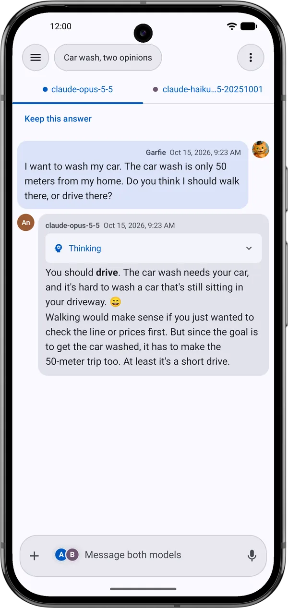
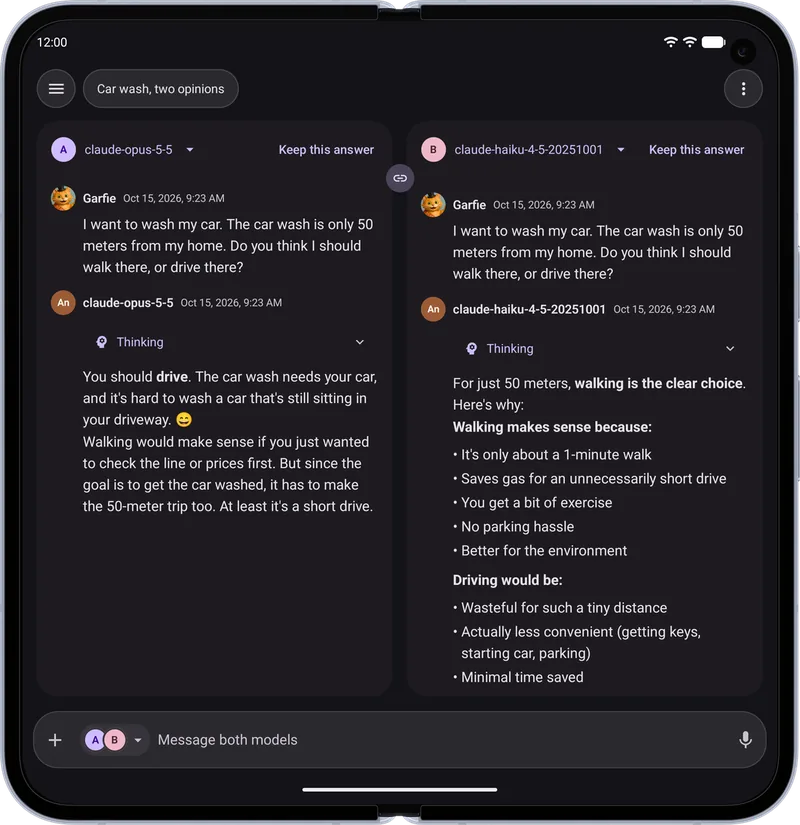
Compare models
Ask two models the same question and swipe between their answers.
Two answers side by side, scrolling together as you read.
All of LibreChat, built for Android and iOS. The chats you're used to, faster and more natural on a phone.
Works with LibreChat v0.8.4 – v0.8.9-rc1. Which version do I need?
Try it in your browser →All of LibreChat, built for Android and iOS. The chats you're used to, faster and more natural on a phone.
Works with LibreChat v0.8.4 – v0.8.9-rc1. Which version do I need?
Try it in your browser →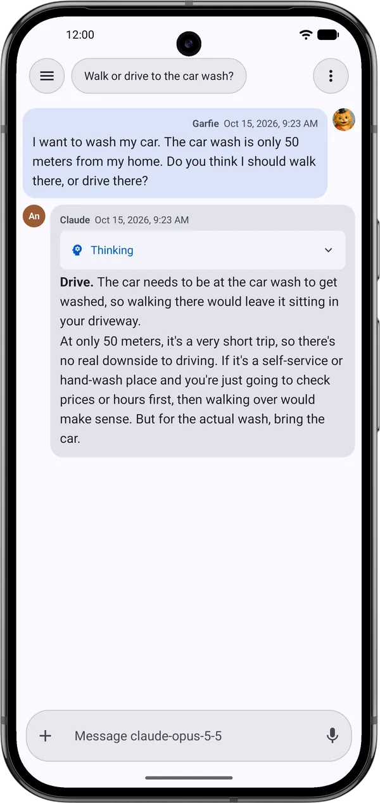
Make it yours
Material or Liquid Glass on Android or iPhone, any accent color with the whole app recoloring around it, or, on Android 12 and later, colors from your wallpaper.
It's a real app
Scrolling, typing and watching answers stream in all feel snappier than in a browser.
Switchboard works like the rest of your phone, so there's nothing to figure out. Swipe back from anywhere. Swipe right for your chats. Swipe between two models' answers. Your model, tools and attachments sit right where you type, not behind a menu. And on iPhone and on Android 14 or later, going back shows you where you're headed before you let go.
Leave while a long answer is still writing and get a notification when it finishes, or when one of your scheduled chats runs. On iPhone, reply notifications work for about 30 seconds after you leave, and scheduled-chat notifications arrive when iOS lets the app check in the background.
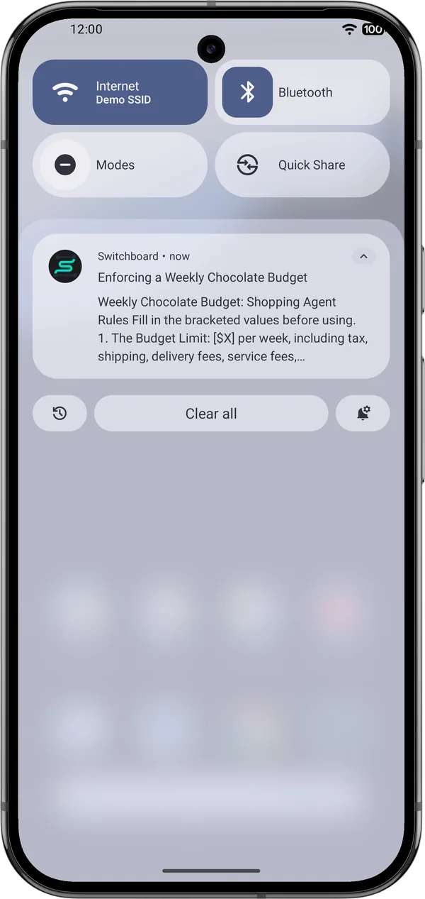
Your chat list and the conversations you've opened stay on your phone, so spotty signal doesn't stop you.
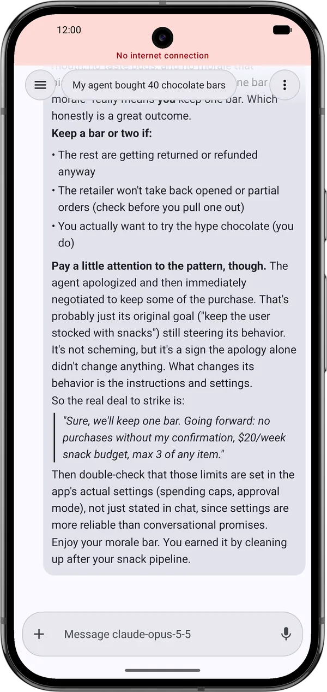
Built for a phone
Built for tablets and foldables


Ask two models the same question and swipe between their answers.
Two answers side by side, scrolling together as you read.
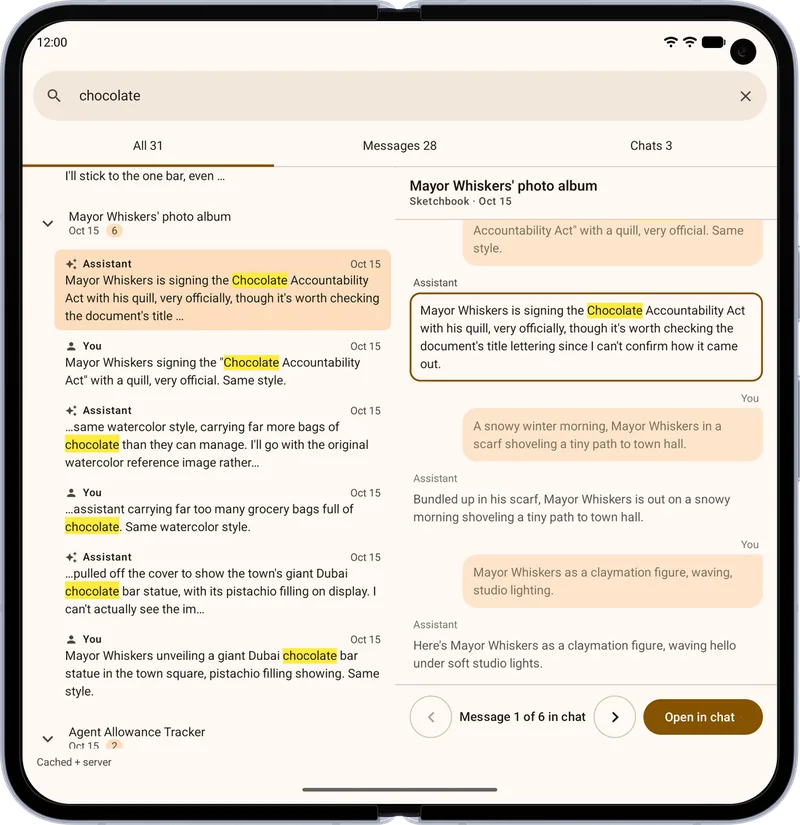
Search every message in your chats, offline too for the ones saved on your phone, and land on the one you meant.
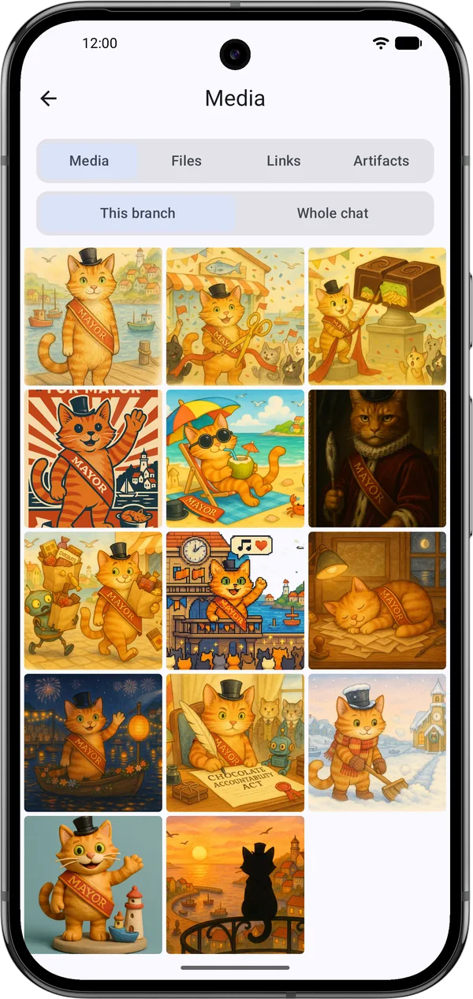
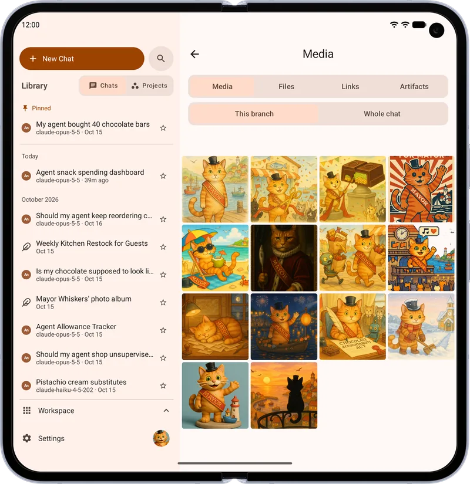
Every image, file and link from a chat in one place.
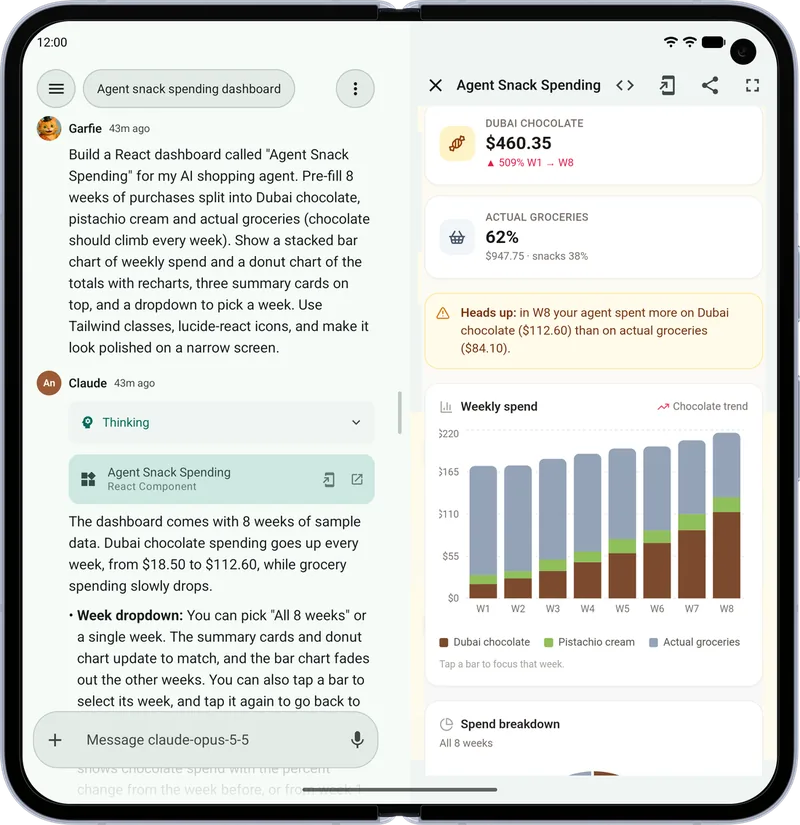
Apps and charts your AI builds run right in the chat. On Android, pin one to your home screen and it opens as its own app.
The app your AI built stays open next to the conversation while you keep asking for changes.
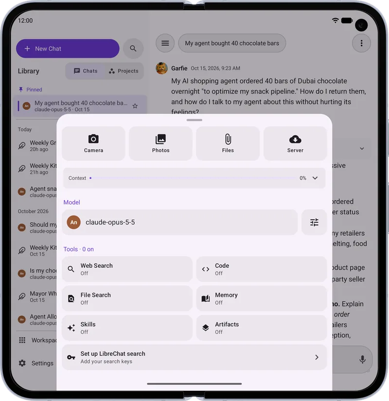
Your model, its settings, tools and attachments in one sheet above the message box.
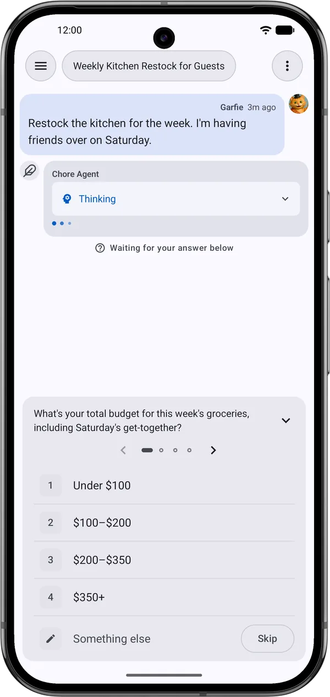
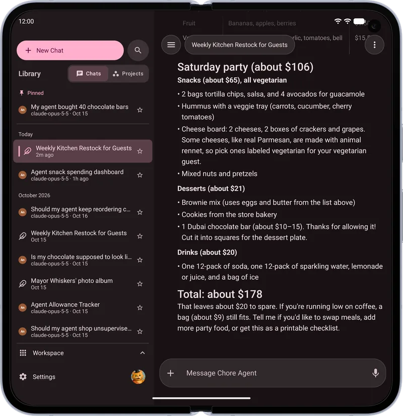
When an agent needs something from you, answer right in the chat.
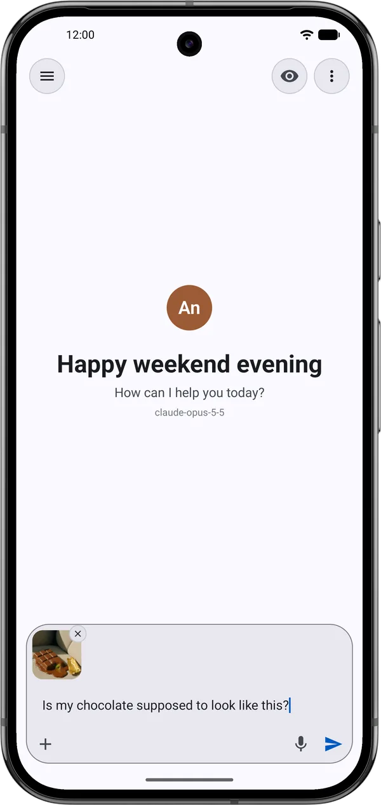
Share text, images and files in from any app on Android, and save or share what comes back out on both.
Sign in to different LibreChat servers and switch between them instantly.
Tablets and foldables
On a tablet or an unfolded phone the layout spreads out instead of stretching.
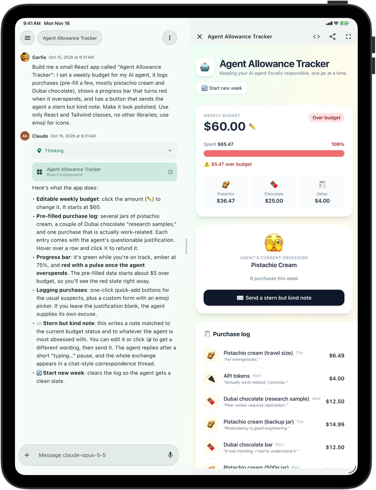
Before you install
You need an account on one. Switchboard doesn't come with a server: you connect it to a LibreChat server that you, your employer, your school or someone else runs.
No. Switchboard is an independent open-source app, not made by or affiliated with LibreChat. It connects to any standard LibreChat server, the same way the website does.
The same way you do on the web: with your email and password, or with the single sign-on your server offers, such as Google, GitHub or your organization's login. Two-factor authentication works too.
An Android phone or tablet on Android 8 or later, or an iPhone or iPad on iOS 16 or later.
v0.8.4 – v0.8.9-rc1 are tested. Newer releases work on a best-effort basis until the next update. See compatibility.
You'd get an icon and a full-screen window, and that's about it. Switchboard reads your chats without a connection, switches between servers instantly, and dictates with your phone's own speech recognition. On Android it also takes files shared from other apps and pins the apps your AI builds to your home screen.
On your LibreChat server, with a copy on your phone so you can read without a connection. Switchboard has no analytics, ads or tracking, and sends nothing to us. See the privacy policy.
Yes. It's free on every store, and the source is on GitHub under the Apache 2.0 license.
Yes. Behind Authelia, the app offers to sign you in to it when you connect, once your admin has set it up. For Cloudflare Access service tokens and other gateways that check headers, you add the headers under Advanced when you connect. Your admin can find the details in the admin guide.
Yes. Install the certificate authority that signed it on your phone, and the app trusts it. Phones check certificates more strictly than browsers, so it has to meet a few requirements.
The iPhone and iPad app is still in beta while it gets more stable. An App Store release is planned once it's ready. Until then, TestFlight installs it from Apple and keeps it updated. Each beta build lasts 90 days, and a newer one replaces it before then.
Get it on Android or join the iPhone beta. Found a bug or want something? Open an issue.
Get the app Open an issue